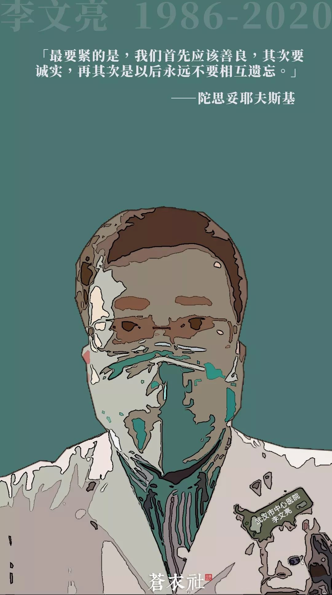
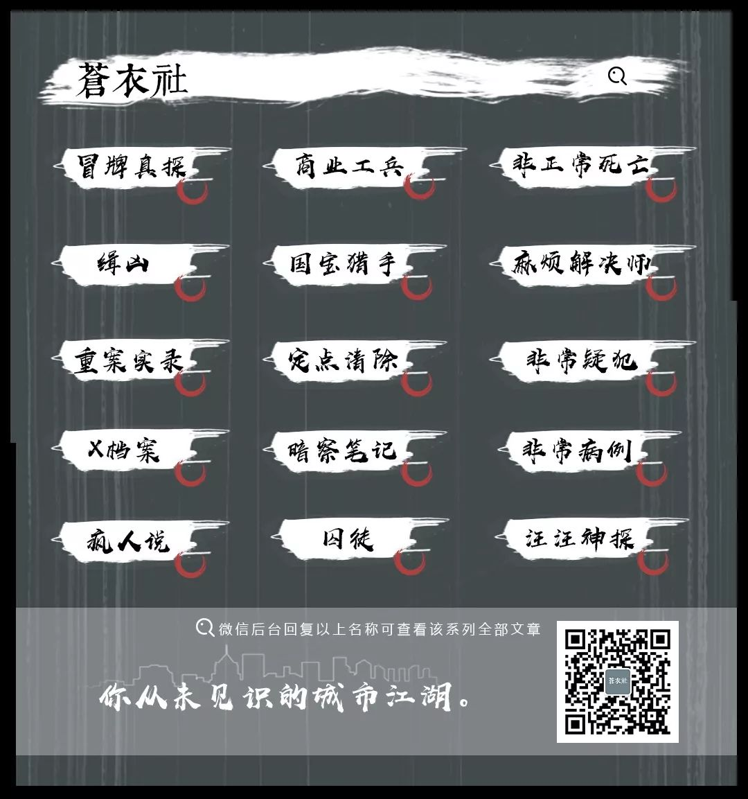

除夕夜，浙江一线医护人员给孩子的一封信
原文链接 备份链接 昨天除夕夜，我们收到了一份沉甸甸的读者来信。信件是由一名父亲写给他远在重庆老家的孩子。这个春节，他们夫妻二人作为浙江前线医护人员，为了对患者负责，放弃了与家人团聚的时间。他们没时间感叹，也来不及思恋，昼夜奋战在疫情一 …

【疫情之下】是苍衣社开设的非虚构故事专栏，记录在新型冠状病毒疫情蔓延时，普通中国人的抗疫报告。
大家好，我是脸叔。
在这个特殊时期，我社开设【疫情之下】专栏，记录普通人的抗疫故事。在这一场灾难中，没有人能够置身事外。我希望疫情的亲历者、见证者，都能讲述自己的故事。
今天的作者，是一名眼科医生。她和被称为“吹哨者”的李文亮医生是同门，疫情爆发前，李文亮医生曾敏锐预知到新型冠状病毒的威胁，很多医护人员因此提高了警惕，得到了有效的防护。
昨日，李文亮医生因感染新型病毒肺炎抢救无效去世。
这是疫情之下的第 2 篇 抗疫报告
【悼念吹哨人】
地点：武汉
时间：2020年2月
全文 3630 字，阅读约需 5 分钟

2019年12月30日，那天正好是我的生日。晚饭过后，接到同事的电话，她神神秘秘地说，李文亮在他们群里发了消息，说华南海鲜市场确诊了7例SARS。
李文亮是我师弟，我们同门，但我和他并不在一个群里。我内心惊讶又有点怀疑，一个眼科医生怎么会优先发现SARS病毒？随后电话又几次响起，同事千叮咛万嘱咐我，千万不要用微信跟家人说，只能电话提醒家人注意。
我挂了电话，仍不以为意，还在跟先生笑话我这同事的谨小慎微，又继续沉浸在我的生日聚会中了。殊不知，看不见的病毒正向我们袭来
第二天起床，照例打开手机阅读一下微信，几个字让我震惊得从床上跳起来。还是那个同事发来的消息，简单的一句话：昨晚李文亮被带走了。
我一下子懵了，电视剧里才有的情节难道在我们身边发生了？我重新思考起同事昨天电话里说的，越发觉得李文亮所发的消息很有可能是确实的。
洗漱完来到单位，大家的眼神里都带着心照不宣，似乎有话要说又不说破，只用一句“知道了吧”互相提点，对方就足以心知肚明。
大家都相信李文亮不会捏造谎言，默默地做好最基本的防护，自己准备了口罩和手套，没有再多说什么。
那几天，我们过了一段看似平静的日子，大家依旧门诊病房轮轴转。想带孩子出门旅游的，和老公为去谁家过年闹别扭的，还有过年值班和计划冲突了忙着跟人换班的，每个人都在脑海里计划着春节的各种安排。
新年就要来了，医院外面的世界已经洋溢着过年的热闹气氛，病房里也永远也安静不下来，走廊里充斥着臭脚丫的气味，喷多少消毒水都压不住。
什么病毒，什么SARS，似乎没什么人提及了。偶尔提及，也是“有限的人传人”。我们即使再忙碌，也觉得再挺挺，一切迟早都会过去。
2020年1月21日，年前的最后一个门诊。此时，钟南山院士已经抵达武汉，确定了“人传人”的证据。这一刻，大家都开始紧张起来。
那天下午，我依旧按时抵达门诊，因为好多人都停诊了，当天下午我十分忙碌。我不是不想停诊，但约了好几个外地病人来复诊，就像和朋友约好了饭局，最后一刻却说不能去了，实在有点不好意思。
再说，作为一名年轻的专家，我实在还不够“资历”随便提出停诊。
那天下午，只有我一个专家门诊和两个普通门诊照常开设。我想起李文亮发出的预警，戴好口罩手套等防护用具，建议患者不要挤在狭窄的空间里，尽量保持一诊室一患者。刚开始大家都散去了，随着等候时间的延长，门外的患者明显地焦躁起来。
第一个进来的是一位手术后复诊的患者，他被老伴搀扶着，一进门，就瘫坐在门口的凳子上。我想起李医生的消息，警觉地问了问情形，他说自从住院以后，就发烧，四肢无力，都快呼吸不过来了，要不是今天要来拆线，真不想来。
我赶紧示意其他患者不要围观，跟他老婆交代，先去急诊科发热门诊看看，这个比拆线要紧。好在是老病号了，虽然有些不理解我的处置，但相信我的判断，还是照我说的话去做了。
趁着一个患者出门的空隙，一位大妈挤进来，环视了一眼，就听着门外大嗓门的武汉话，“口罩手套搞得嘿死个人，就她鬼作些！”
我气愤却又无奈，口罩遮住了我的大部分脸，可我仍想用紧蹙的眉毛和凌厉的眼神回敬她。
周围的患者都悻悻地笑着，并不多言。
等我看完门诊，再微信电话联系发热病人时，电话那头始终没有人接电话。
2020年1月22日，医院决定将我们科作为隔离病房，收治肺炎患者，气氛越发地紧张起来。每个人都意识到了事情的严重性，疫情发展之迅猛已超出了我们的想象。
护理团队首当其冲，在第一线冲锋陷阵：重新整理病房；将在院的20多名患者逐个安排出院；安装空气净化器；领取防护物资，每个人都在默默的做着手头上的活。
这些85、90后的孩子们，她们甚至对17年前的非典都没有太深刻的印象，对未知病毒的传播途径更是还不太了解，在防护物资还处于紧缺的情况下，就被推上了疫情的一线阵地——隔离病房。
这十个孩子，来不及回家拿换洗的衣服，也来不及和家人孩子告别，就匆匆地穿上了白色的隔离服。不怕么？是来不及害怕。一切都来得那么迅速，伴随着每天疫情的变化，每个人都一面惶惶不安又一面坚定执着。
第一次穿上防护服，她们没有经验，防护服里的衣服穿得并不多。隔离病房里因为担心中央空调的通风管道可能造成病毒传播而停止了运作，温度骤降。一到凌晨，值班的护士冷得直发抖，只得披了一床被子，裹紧身子，在平时熟悉的病房里，守着死一般沉寂的夜。
除此之外，上厕所和生理期的困扰更是给了她一个沉重的打击。连日的忙碌，让她忘了看日历表，该死的例假在这个时候如期而至了。
可是能怎么办呢？假如脱了防护服出去处理干净，就没有新的防护服可穿进隔离病房了。
我实在无法想象，一个年轻女孩，是如何窘迫地夹紧双腿，揉着隐隐作痛的小腹，弓着身子，让血慢一点流下来。寒冷、隐痛、恐惧，成为她并不太长的人生里最难熬的一夜。
太阳终于出来了，接班的同事过来换岗，她什么也没说，只希望自己的防护服不要太难看，能让她体面地走出隔离病房。
隔离病房的护士全部都被安排在医院对面的宾馆里集体居住，免除了她们的后顾之忧。下班后，她们在宾馆里集合，十几个小护士都围坐在一起。
最开始，是平平打电话给老公。视频里，她原本白皙的脸庞上都是绷带留下的勒痕，说着说着，孩子闯入了镜头，软糯糯地叫了声“妈妈”。平平转过脸去擦眼泪，旁边的小护士也忍不住抽泣起来。
夜里12点，忐忑不安的护士们接到护理部紧急电话——和护士长密切接触的9名护士立刻去放射科做CT检查和咽部拭子新型冠状病毒核酸检测。
她们都明白这个电话的意图，护士长的胸部CT被高度怀疑是新型冠状病毒肺炎，因此其他护士都存在被感染的潜在风险，需要立即排查。
谁也没多说什么，默默地穿好衣服，戴上口罩，出门。走在路上，她们自觉地与其他人拉开一点距离。谁也不知道病毒已经在谁的身上安了家，又会将谁吞噬。
大年三十的夜里，冷风呼啸，安静得有些不太真实。
CT结果很快就出来了，三人可疑，咽部拭子的结果还得等到第二天。现在的她们才发现，疾病并不可怕，可怕的是对未知的恐惧。她们全部被隔离等待结果。时间突然富裕了，但她们能做的只是拿着手机不停地刷新消息。
看到群里其他的同事累到崩溃大哭，尿不湿湿透了也不敢换，10多个小时不吃不喝不能上厕所，她们再也坐不住了，纷纷表示不想呆在宾馆里，要回到一线战场上去，和姐妹们在一起！
所幸，咽部拭子结果出来了，全部都是阴性。她们甚至还没有渡过14天的隔离期，又重返了战场。
没有进过隔离病房的人，可能不会有太深的体会。平时，我们并不是呼吸科或者感染科的医护人员，并没有太多接触传染病的机会。当疫情的号角吹响时，全院的医生一瞬间都转变成了感染科医生。
第一次去隔离病房值班时，同为医生的先生打电话叮嘱我：“动作慢一点，一步步来……”最后还故作轻松地说了句，“没什么好怕的！”话音未落，电话那头还不知道掩饰自己情绪的女儿大哭起来：“妈妈，我不要你去！”
我强忍着泪水挂断电话，此刻说什么都是多余的。我一遍遍在脑海里反复回忆视频里穿防护服的动作，生怕有一点点疏漏。
推开那扇沉重的大门，平日里满满当当的病房此刻空落得让我有些恍惚。
此时已经是午夜12点，病房里灯光晦暗，呼吸不畅的患者耷拉着脑袋，旁边陪着焦急的家属。我过去和家属交代，没说几句话，防护目镜就泛起了朦胧的雾气。由于看不清对方的检查结果，我们不得不交谈几句就停下来，待雾气散去再继续说治疗方案和风险。
患者家属不停地点头说“辛苦了，这么晚，你们真是辛苦了”。隔着厚厚的防护服，我没办法给一个安慰的表情，只能点点头，把我们能做的都跟他讲清楚。
今天，距离李文亮给我们预警疫情已经过去了一个多月。如果没有这些有良知和担当的人一再提醒，也许这一个月，我们依然在毫无防备地收治病人，将自己暴露在病毒的威胁下。
这段日子，我没有太多时间关注外界的声音，光是工作群的消息就看不过来，每天活动轨迹只限于病房和宾馆。
可昨晚，工作群里传出了师弟李文亮因感染新型肺炎抢救无效的消息。
我接受不了，无话可说。
*文中配图来自网络。
*为保护当事人隐私，文中部分人物为化名。

—END—
编辑 | 刘建
征稿：
大家好，我是脸叔。自疫情发生以来，我一直在关注疫区情况。我是在武汉上的大学，那里有很多我的师友，现在我能做的有限，只希望多征集一些故事，为民间发声。
无论你是医务工作者、社会救援者、疫区群众，还是餐饮、交通、宾馆等公共服务人员，我都想倾听你的真实经历，传达诉求。
投稿邮箱：cang1she@163.com
稿费：1500-3000元/篇

真是脸叔
为普通人发声
微信扫一扫赞赏作者 赞赏
长按二维码向我转账
为普通人发声
受苹果公司新规定影响，微信 iOS 版的赞赏功能被关闭，可通过二维码转账支持公众号。
原文链接 备份链接 昨天除夕夜，我们收到了一份沉甸甸的读者来信。信件是由一名父亲写给他远在重庆老家的孩子。这个春节，他们夫妻二人作为浙江前线医护人员，为了对患者负责，放弃了与家人团聚的时间。他们没时间感叹，也来不及思恋，昼夜奋战在疫情一 …
原文链接 备份链接 到2月7日， 武汉已经封城16天了， 一条辗转联系上了身在武汉的救援志愿者李雄， 通过他的叙述， 了解武汉的千万民众，日常生活到底如何？ 李雄 李雄本身是一个小企业主，财务自由， 去年10月，他加入了蓝天救援队， …
原文链接 备份链接 李文亮生前发给中青报·中青网记者杨海的照片 中青报·中青网记者 杨海 2月7日凌晨2点58分，感染新冠肺炎的武汉市中心医院眼科大夫李文亮抢救无效去世。 2月2日，他在自己的头条号上更新自己的病情，他说前一天自己的新冠 …
原文链接 备份链接 非常时期，武汉成了全国人民挂念、祈福的城市。封城后，武汉人民的真实生活是什么样？ 正和岛自1月26日起特别推出《叶青：我在武汉疫区的第N天》专栏。叶青是一位定居武汉40年的市民，也是一名学者和官员。接下来的一段时间，他 …
原文链接 备份链接 全文共*1529*字，阅读大约需要3分钟。 训诫书犹在，“吹哨人”何以安息？人们还希望看到对李文亮等人的训诫能得到纠正，让付出了巨大代价的“吹哨人”能得到正名。 本文首发于南方周末 未经授权 不得转载 文 | …